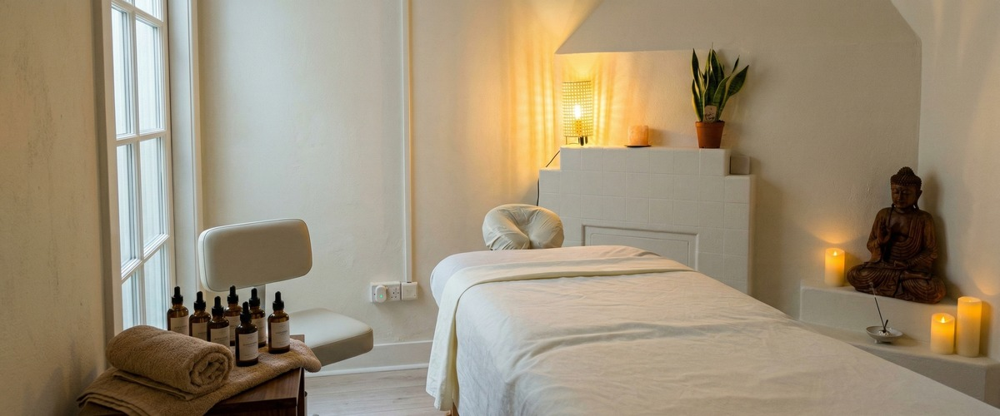
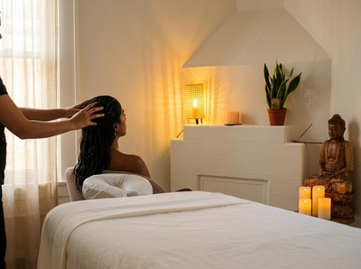
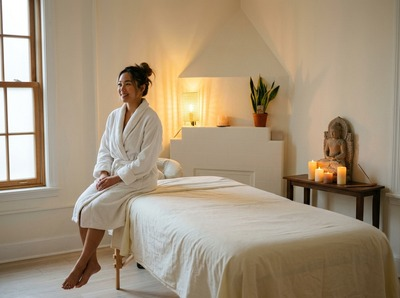

If your scalp feels dry, your hair lacks lustre, or tension has built up around your head and neck, head and hair oiling in Glasgow at Serendipity Massage Therapy & Wellness offers a deeply nourishing solution.

Rooted in Ayurvedic tradition, this treatment combines the therapeutic benefits of warm oil application with expert scalp massage to address both hair health and physical tension in a single session.
Head and hair oiling draws from centuries of Ayurvedic medicine. Nourishing oils are worked into the scalp and hair using deliberate massage techniques. At Serendipity, the treatment focuses on the scalp, crown, and upper neck.

Warm therapeutic oils penetrate the hair shaft, stimulate circulation, and ease muscular tension in the head, neck, and shoulders.
The massage element is what lifts this beyond a simple hair treatment. Circular fingertip movements and targeted pressure across the scalp increase blood flow to the hair follicles, while releasing tightness in the muscles around the skull.
The result works on two levels: improving scalp and hair condition, and providing real physical relief.
This treatment suits anyone who carries tension in their head, neck, or shoulders, or wants to improve their scalp and hair condition. It works well for office professionals who spend long hours at screens, and for people dealing with stress-related scalp tightness or dry, brittle hair.
It is also a gentle, effective option for clients who are new to massage and prefer a less intense treatment.
Your session begins with a brief consultation to understand your hair type and any areas of tension or concern. You remain fully or partially clothed from the shoulders down. The focus stays entirely on your scalp, head, and upper neck.
Warm oil is applied directly to the scalp and worked in using circular massage, gentle pressure, and effleurage strokes down the neck.
Sessions typically run between 30 and 45 minutes. Afterwards, your scalp will feel free of tension, and your hair will carry the oil until your next wash.
Most clients feel a clear sense of calm and physical lightness straight after. You can book your head and hair oiling session online and choose the duration that suits you.

At Serendipity Massage Therapy & Wellness, every treatment is delivered by a trained therapist. All techniques are developed to a consistent standard by head therapist Jariya Malone.
Whether you are coming for scalp health, hair nourishment, or relief from head tension, you are in the hands of a team that takes both seriously. Book your appointment online and take the first step towards a healthier scalp and a clearer head.
Your therapist will use a warm oil chosen to suit your scalp type and hair condition. Options include coconut, almond, or argan oil. Each is selected for its ability to penetrate the hair shaft and support scalp health.
If you have any sensitivities or allergies, let us know at your consultation and we will adjust accordingly.
Yes, your hair and scalp will carry some oil after the treatment. We recommend booking on a day when you can wash your hair afterwards.
Many clients find that leaving the oil in for a couple of hours extends the conditioning benefit before washing it out.
Sessions run between 30 and 45 minutes depending on your chosen appointment. The time covers a brief consultation, the full oil application and scalp massage, and a few minutes to settle before you leave.
It fits comfortably into a lunch break or early evening.
For clients with chronic scalp dryness, hair breakage, or regular tension headaches, we suggest a session every two to four weeks. If you are coming mainly for stress relief, once a month is a good starting point.
Your therapist can advise on a routine that suits your needs at the end of your first session.
Please let us know about any scalp conditions, skin sensitivities, or allergies before your appointment. In many cases, a gentler oil or adjusted technique can be used to keep the treatment comfortable and beneficial.
We do not recommend this treatment if you have active scalp inflammation or open wounds on the scalp or surrounding area.
A Thai head massage at Serendipity uses acupressure and massage on the scalp, neck, and upper shoulders without oil. It targets muscular tension and energy pathways.
Head and hair oiling uses warm oil as a core part of the treatment, with the main aim of nourishing the scalp and hair alongside the massage benefit. Both treat tension in the head and neck, but the experience and focus are different.